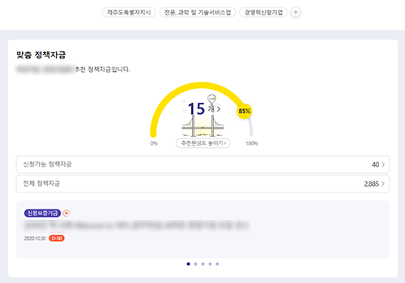
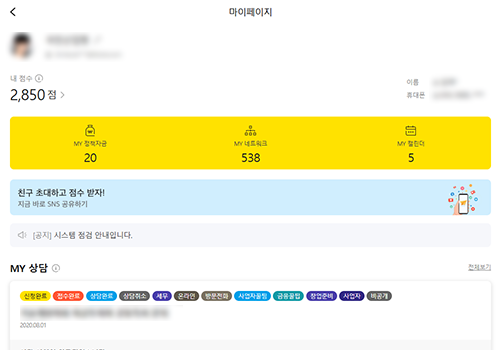
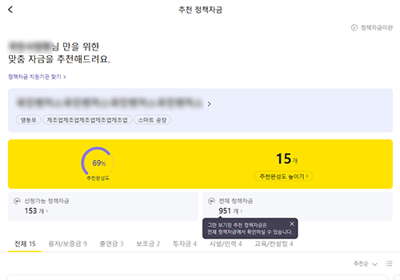
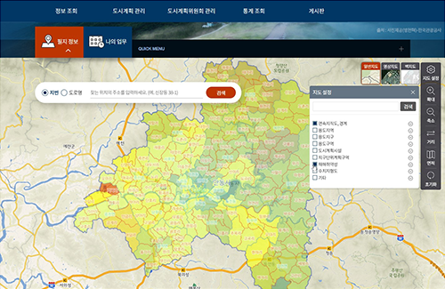
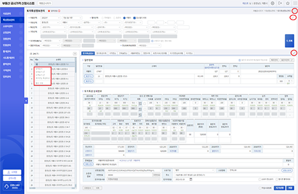
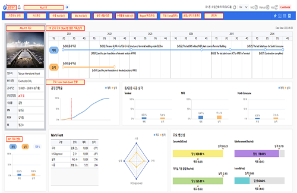

본문컨텐츠
사업분야
전문성을 바탕으로 대형 기관의 핵심 시스템과 비대면 플랫폼을 구축합니다.
안정성·보안성을 갖춘 SI 서비스를 통해 복잡한 금융 프로세스의 디지털 전환을 완벽히 실현합니다.
-
01
금융 및 공공 SI 전문 기업
- 대형 금융기관의 핵심 시스템 구축 경험을 통한 전문성 보유
- 산업의 깊은 이해도와 시스템 구축에 대한 풍부한 경험 보유
- 높은 안정성, 확장성, 보안성을 동시에 갖춘 고품질 서비스 제공
-
02
다양한 사업 수행 경험을 통한 준비된 기업
- 기업금융, 디지털금융, 비대면 금융 플랫폼 등 규제 환경을 고려한 다양한 프로젝트 수행
- 주요 대형 금융기관의 대규모 SI 사업 성공적 완수
- 고객 중심 서비스 설계 및 복잡한 금융 업무 프로세스의 안정적인 디지털 전환 구현
- 
- 
- 
GIS 기반 데이터 구축과 분석 역량을 바탕으로 공공 부문의 정책 결정을 지원하며,
디지털 전환과 스마트 행정 혁신을 선도하는 GIS SI 전문 기업입니다.
-
01
정확하고 신뢰성 높은 공간정보 플랫폼
- 행정구역, 토지, 건물, 환경 등 다양한 공간정보의 통합 및 연계
- 복잡한 공공 데이터를 효율적으로 관리할 수 있는 최적의 플랫폼 구축
- 데이터 분석 및 시각화를 통한 정책 결정의 활용도 극대화
-
02
전 주기 사업 수행 역량 보유
- 데이터 구축부터 서비스 개발, 시스템 연계까지 전 과정 수행 가능
- 대규모 데이터 처리 및 공공 표준·보안 요구사항의 완벽한 준수
- 공공 GIS 환경에 최적화된 안정적이고 전문적인 시스템 제공
-
03
공간정보 기반 의사결정 지원 체계
- 도시·부동산 관리, 에너지 모니터링 등 다각적 의사결정 지원
- 실시간 분석 시스템을 통한 효율적인 공공 분야 관리 솔루션 구현
- 시스템 구축 이후 운영 및 고도화까지 고려한 지속 가능한 플랫폼 제안
-
04
공공 부문 디지털 전환 및 혁신 선도
- 스마트 행정 구현을 위한 핵심 기술로서 GIS 가치 확장 주도
- 공간정보 기반의 공공 서비스 혁신을 이끄는 시장 리더십 확보
- 미래 공공 부문의 디지털 전환을 지원하는 핵심 파트너 역할 수행
-  국토이용정보체계 통합 플랫폼(KLIP)
-  부동산 공시가격 산정시스템
-
 디지털 트윈국토 서비스(V-World)
디지털 트윈국토 서비스(V-World)
-  Web기반 물량산출관리
AI 기반 분석·예측 솔루션 전문 기업으로, 제조(MES)와 도시·법률(RAG) 등 현장에 즉시 도입 가능한
맞춤형 기술을 통해 고객의 의사결정과 디지털 경쟁력을 지원합니다.
-
01
AI 솔루션 기획·개발 전문 기업
- 현장 문제 해결에 최적화된 맞춤형 AI 솔루션 제공
- 실무 중심의 분석과 예측을 통해 고객의 데이터 의사결정 역량을 강화
- 단순 시스템 구축을 넘어 현장에서 즉시 활용 가능한 실무형 서비스를 지향
-
02
AI 모델링 역량 및 전주기 개발 체계
- 데이터 전처리부터 모델 고도화까지 AI 전 주기에 걸친 자체 개발 체계 보유
- 이상 탐지 및 패턴 분석 등 다양한 기능을 기존 업무 환경에 맞게 서비스화
- 복잡한 분석 결과를 직관적인 시각화로 구현하여 현업의 데이터 활용도를 높임
-
03
제조 현장 특화 AI 솔루션
- MES 데이터와 연계하여 생산량 예측 및 품질 관리 등 제조 효율화 지원
- 실시간 데이터 기반의 지능형 제조 환경을 구축하여 공정 최적화 실현
- 제조 현장의 이상 상태를 조기에 탐지하여 운영 손실 방지와 경쟁력 강화에 기여
-
04
도시·법률 RAG 지능형 서비스
- RAG 기술로 방대한 도시계획 및 법령 데이터를 체계적으로 관리하고 분석
- 행정 및 법률 담당자를 위한 정확한 질의응답과 지능형 정보 검색 서비스 제공
- 전문 분야에 특화된 AI 기술력을 바탕으로 업무 효율성과 정보 신뢰성을 제고
C2I는 디지털 전환(DX)과 AI·데이터 기술을 전략으로 구현하는 컨설팅 기업입니다.
급변하는 기술 환경 속에서 과학기술·ICT·공공·산업 전반을 관통하는 AI 기반 융복합 디지털 전략을 설계합니다.
ISP·ISMP·중장기 정보화 전략부터 AI·데이터 중심 디지털 전환 로드맵, 지능형 정보화·산업 정책 컨설팅까지,
기술 트렌드 분석에 그치지 않고 즉시 실행 가능한 전략과 구조를 제시합니다.
C2I는 계획을 만드는 컨설팅이 아니라, AI가 작동하고 데이터가 성과로 이어지는 디지털 전환을 실현합니다.
하단영역

대표이사:문성환 | 사업자등록번호 : 711-88-01903 | 주소: 경기도 안양시 동안구 시민대로 248번길 25, 안양산업진흥원 406호
대표번호:070-4117-6371~2 | FAX:031-383-6370
COPYRIGHT ⓒ C2I ALL RIGHTS RESERVED